In the previous chapters we have covered many of the foundational Salesforce technology concepts. Now we will dive into more of the specifics of the role of an architect working with Salesforce. As we touched on in Chapter 5, architect definitely makes the list of commonly misused and confused terms in the world of information technology, and it has no clearer a definition in Salesforce than in any other realm. The distinctions between the different definitions are blurry at best, and just about every one is met with exceptions and objections.
To start the conversation, we will use a very simple definition, and we’ll expand from there. As you’ll see in this chapter, there are many different roles an architect can take in a project, and they can be spread across many different job titles. Some of the most skilled architects I have worked with blended project management, business analysis, user experience, and client relationship skills to deliver complex masterpieces of functionality. I have also met many architects who have gathered diverse hands-on building or development skills throughout their careers. Whether these roles are specified in a job title or distributed across one or several people depends on the scale of the effort. Most of the time, anyone with a perspective of these roles’ goals will decide how much time to spend focusing on each. Many of these concepts only become critical in larger projects, or when you have many teams to coordinate. As you are planning your project, you will want to apply communication processes and add documentation and diagramming to your plans.
A builder creates things with a defined set of skills or tools. Developers, engineers, and designers are some examples of builders. Builders usually work in a specific horizontal or vertical realm. A full stack engineer builds at multiple tiers in the same vertical or horizontal. (“Full stack” can also mean that this person writes both frontend and backend code: data access and data display.)
An architect builds plans to assemble various components across multiple stacks into a compound solution. The architect’s skill is multidimensional, requiring enough knowledge of the traits of each of those components to recommend an effective, holistic solution. The solution must take into account not only the technical aspects but also other facets of the entire scenario, such as budget, security, system resources, employee resources, skill sets, long-term maintenance, performance, processes, success measures, exposures, communication, fit, and stakeholder alignment.
The roles of builder and architect are not mutually exclusive. The growth of the Salesforce ecosystem has created many builder-architects. Maybe the funnier definition is true: “Those who can’t build, architect.” My favorite analogy as a project architect is taking on the role of a certain web-slinging superhero. Seeing things that need to be connected and locking them together by creating a bridge of understanding. Sharing the relationships between indirectly connected concepts. Shooting webs of understanding to connect people and ideas. Just your friendly neighborhood pattern-human.
The variety of roles that an architect can play in large Salesforce implementation or customization projects is vastly unappreciated. It’s also difficult to assign a direct value to the role of the architect in keeping a project aligned to a bigger picture. As with security roles, their value often only becomes apparent after something goes wrong due to their absence. Some roles are forward-looking, operating in a green field with fewer operational requirements. However, many, if not most, are essentially support roles. To be clear, though these are all roles that are widely recognized and commonly encountered in a Salesforce context, it is unlikely that these will be official titles on a project team. Architects often fill several of these roles rather than focusing on a single area.
The role of a Success Architect is a bit hard to define, but it can deliver very concrete value in large projects. Everyone working on a project is responsible for its success. The Success Architect looks at the plan for the project and tries to foresee and resolve any problems that the plan might create or encounter.
Success Architects often solve problems with people processes more than technical solutions. One of my favorite contributions as a Success Architect was to predict the growth and attrition of team members over a large, multiyear project. We required each team to create a storybook of functionality, combined with highly visual system maps. This is a good practice that can regularly fall by the wayside because of budget constraints and other priorities, but due to the specific pace of this project, the help it provided in enabling fast onboarding of new members proved critical to success.
Success Architects will need to adapt to issues faced in real time as well as predicting bottlenecks or challenges and working to mitigate them. Another niche example of a process born of the observation of a keen Success Architect was the alignment of release cadences that varied drastically. Delivery of an integration project required four systems to consecutively provide data to a final system. All four systems had different release timings and windows. If we hadn’t planned and coordinated the required changes to each downstream system at the beginning of the project, this could have resulted in a massive bottleneck and caused delays. Spotting this iceberg early in the project and coordinating all of the team’s disparate releases was a novel challenge with a critical outcome.
Foresight, adaptability, and communication are the key traits of the Success Architect, who often works on the high-visibility challenges of a project. Figure 11-1 outlines the core focus of this role.
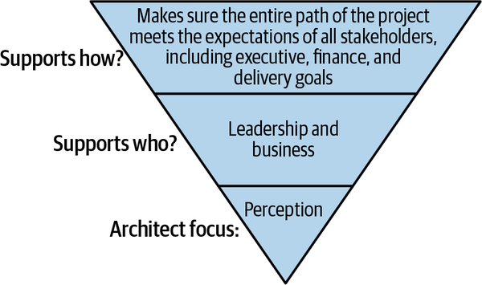
The Operational Architect is the more day-to-day, in-the-present version of the Success Architect. They keep the project on the technical path and navigate all the technical challenges, keeping teams operating at peak efficiency. They’re the escalation point for all technical teams within their scope, and they serve as the tie-breaker and champion for key decisions faced by any of those teams. The Operational Architect makes sure that the solution described as “the plan” is adhered to and that the desired outcomes are achieved. This key player is at the intersection of DevOps, development, user experience, project management, and security. They may also be referred to as a tech lead or technical architect.
This is more of a tactical role, so the Operational Architect doesn’t get to prioritize documentation or strategy. Key traits are an ability to listen and keep a balance between priorities. The Operational Architect will also maintain communication with other teams. They know when and how to escalate critical issues.
Figure 11-2 outlines the core focus of the Operational Architect.
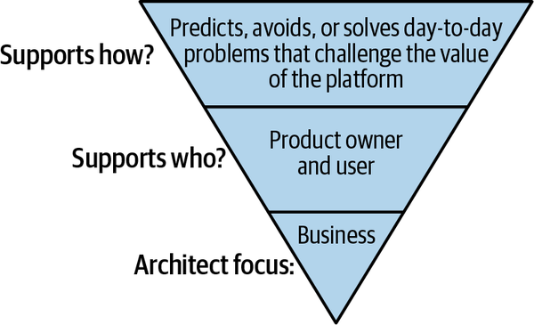
The Solution Architect creates the detailed technical plan for addressing the business requirements of a project and decides which components and features to use to build a solution. They may also be responsible for designing the data model used for a solution. These are extremely valuable members of any Salesforce team. They are often very experienced builders and know the most effective way to deliver functionality within Salesforce. I have seen every tenure of technician in this role, from senior developer or admin to senior enterprise architect. On every project team, there’s someone in the role of Solution Architect (or at least who is responsible for delivering solution architecture). Usually a Solution Architect is delivering solutions in a single stack—specifically Salesforce—so this role does not really meet our previous definition of an architect (it might more accurately be called Solution Engineer).
Figure 11-3 outlines the core focus of the Solution Architect. This role maps fairly directly to the Application Architect certification pathway within the Salesforce certification ecosystem.
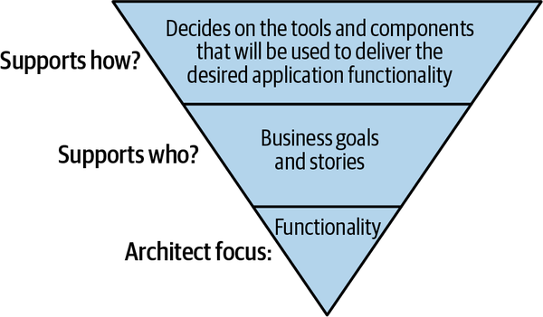
The UX Architect is another unsung hero in the trenches of a project that can have a huge impact on its success. They keep a constant eye on all of the technical goals that affect the final reception of the product by the consumer.
While executing a project, tiny changes in scope or approach can have a large cumulative effect on the final result. Everything from the performance of integrations to the net perceived value of the end product has to be tracked and accounted for. This is especially true in Agile projects, where the delivery expectations are expected to change.
User experience is sometimes interpreted to mean user interface, but there’s more to it than that. Put simply, the user experience is the sum of all of the user interactions with an application or brand. The user experience can be bad due to many factors not necessarily in the control of the application. A set of pages can have the perfect font, good contrast, and very clear wording, but the user experience can still be terrible if they’re not adapted to the situation at hand. If you are developing in multiple channels (telephone, chat, web or mobile) and the user has access to all of them, the cumulative effects of all the interfaces come into play. The UX Architect manages the full scope of interaction, including performance and outside influences along with in-page impact.
Wearing this hat, I once managed to put myself out of a job. Of a large set of features planned for a customer-facing application, a small percentage were dropped from the scope during the first weeks of the project. The remaining feature list was long, and it would have taken several months to complete just those. There were good technical reasons for removing all of the features that were dropped, but unfortunately those were the ones that represented most of the draw for the customer to actually go to the site. Everything that was retained was important to the business, but there was no motivation for a customer to want to use the application. After I made this observation and communicated it to the client, the project was quickly shut down, saving them a lot of money but also putting my team out of work. Fortunately, they quickly found other uses for our skills!
Applications that make use of multiple integrations can also face timing issues that should be reviewed from a user’s perspective. I once worked on an application that had been designed to read everything from a single “source of truth” in order to get the most accurate values. Later functions were designed to send updates (write) to a “source of record” to reduce load on the source of truth. This might not seem like a bad design decision, until you consider the case where two consecutive calls write data and expect to read it immediately after. This caused a problem, because the downstream synchronization between the source of record and the source of truth was a nightly process. This meant that there could be as much as a 24-hour lag between new data being written and that data being available for reads. Imagine getting a message like, “You have successfully updated your credit card information. Please return to the site tomorrow to make a purchase.” Clearly, this issue had to be rectified before the site went live to avoid a tragic user experience.
Figure 11-4 outlines the core focus of the UX Architect, who is responsible for making sure that all the components involved contribute to the best possible user experience.
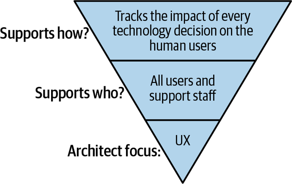
Salesforce has an excellent certification track for Technical Architects. The certification pathway involves passing about 10 exams, culminating in one or more panel interviews. During these interviews, you are given a written scenario describing a business’s need for Salesforce functionality. Your task is to plan and diagram a solution that meets all of the business’s criteria with the functionality of the core platform. You can include other adjacent products if they make sense to fill the requirements, but these should mostly be covered by Sales Cloud and Service Cloud functionality. You get three hours to review the scenario and prepare your solution model and diagrams. After a short break, you have 45 minutes to present your solution to the panel of experts, followed by another 40 minutes of Q&A to defend it. The panel digs into your solution across several domains: security, data, integration, etc. It is not uncommon for candidates to take multiple years to prepare for this exam, and they are vetted at an extreme level. The goal is to ensure that CTAs can quickly and thoroughly conceive and describe solutions to meet any needs within the Salesforce platform.
The body of knowledge required to succeed in this panel exam is focused around Salesforce: development in Salesforce, security in Salesforce, data modeling in Salesforce, integrations in Salesforce, authentication in Salesforce. So, while the CTA exam is the most big-picture architecture exam that Salesforce has, it is mostly limited to this single platform. If you think of an architect as someone who constructs solutions with multiple platforms, you might consider this more of an application-building exam. That being said, every Salesforce CTA I have worked with has had extensive knowledge of other systems and architecture patterns. I don’t believe you can get to this level of Salesforce fluency without an underlying knowledge of the deep structures that multiplatform architects are familiar with.
Figure 11-5 shows an overview of the timeline and structure of the CTA certification pathway.
Studying for and passing the CTA exam is a very hot topic of discussion among Salesforce architects. You can almost guarantee that CTAs will be very good at all of the architect roles described in this chapter. Other certifications can be acquired without the requisite experience required to actually perform in those roles; the CTA exam is the exception.
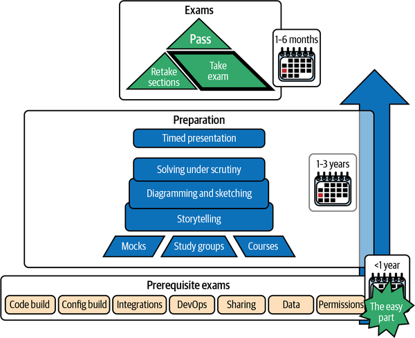
One of the main ways that an architect can keep a project aligned is through structured communications. Like it or not, this involves having meetings. A good way to keep meetings productive is to have a good set of central documents to regularly review and sign off on. Work with project leadership to make this process mandatory and part of the formal project ceremonies. Work sessions to collaborate on these artifacts are usually necessary.
Establishing a regular cadence of Architecture Review Board (ARB) meetings can help in maintaining clear lines of communication and project artifacts. Encourage regular cameo appearances by leadership to keep them prioritized. You should also invite architects and engineers with advanced perspectives. If you have access to a security or data architecture team, they make good partners as well.
A primary focus of ARB meetings should be around making and/or documenting and communicating decisions, aligned around long-term and short-term success metrics. Establishing the appropriate level of detail for these decisions is more of an art than a science. Decisions can be made by the ARB, made independently by teams, or made by teams and escalated to the ARB for review. Logging and sharing decisions that don’t require escalation is a great way of creating breadcrumbs to illustrate the path and trajectory of a project. This becomes crucial when you are dealing with a large number of teams.
Decisions generally qualify for bringing to an ARB for review if they:
Generate a drastic change in the technical approach from what was originally planned. Examples include:
New integration
Alteration in permission structure
Purchase of a third-party component
Creation of a reusable component
Cause a change to the direct costs of the project or ensuing maintenance costs.
Create technical debt that will or might exact a toll later.
Describe a significant milestone for the progress of the project.
Provide insurance against 20/20 hindsight challenges and absentee stakeholders.
Will not be boring to leadership.
A well-maintained decision log can provide a vital record of the technical components of the project. A normal team should generate one to five loggable decisions per sprint.
Another communication asset for architecture practitioners is documentation. It can be very difficult to give documentation duties priority over other immediate concerns, but this should be seen as the primary success measure for an architect. The key to a successful architecture documentation practice is having a well-thought-out plan backed by a process that requires regular updates and communication of critical changes. The ARB meetings and decision documentation described in the previous section should be wired into your documentation practice. Schedule review sessions (alone or with stakeholders) to create a cadence for updating documents. Make appointments for yourself to ensure you get it done.
Make sure to date stamp your documents. Always assume that the document you are working on now is the only and best document that someone will find. Provide as much context about “now” as you can. This will help the reader start piecing together what has happened “since.” Describe the events that led to the changes from the previous state described in the previous document.
This is the more-art-than-science part of the architect’s role. Due to the effort involved in keeping documents up to date, deciding what to spend your time and energy on is key. As mentioned previously, it is paramount to make adherence to and participation in documentation practices a mandatory part of a process. Work with leadership and project managers to outline your expectations for official project artifacts. Establish a cadence and a grading system for participation. The following sections define some of the typical tiers of diagrams and the perspectives that drive you to map them.
There are a few standard schools of thought regarding how to approach documentation. I tend to use the 4+1 architecture view model, described further in “Diagramming Practices”, as the core of any project documentation effort. I start at a very high level and create what I call a “city view” of a project, looking at it from a few perspectives. This top-level, all-encompassing view is critical because it can serve as a visual “table of contents” for all of your other documentation. Make sure to take the appropriate amount of time to keep your top-level view up to date. The path that the architect forges is useless if no one can follow along with your designs.
You should adapt your diagrams and documentation to respond as soon as complexity or confusion pops up. We’ve already discussed how some of the seemingly simplest terms, like application, can have many meanings. Not clarifying the definitions early on can cause critical stakeholder alignment problems. You can’t expect your colleagues to just “go to Trailhead” and catch up on all of your accumulated understanding.
The inspiration for this book was the large number of lasting friendships I have made based on being able to work across communication and paradigm barriers to explain Salesforce. Share your vision regularly. If you see confusion, address it. Bear in mind that complexity can have many different definitions. Do your best to anticipate the components that will be used by multiple teams, and make sure they’re all on the same page. Factor in long-term skill set planning for teams that will take over support after the implementation is done. Product owners and architects who own the infrastructure in the long term will want to understand when new features are added—especially those features that will add to the list of skills required to support the solution.
Clearly marking pieces of an architecture that are prone to failure or might have little or no signaling of failure is key for the long-term support of a project. Integrations with different technologies are obvious candidates when building a map of support concerns. Data maintained by end users is another possible point of failure. These failure points are also an area of interest for security teams, who will primarily be concerned with the interfaces between systems that have different types of usage vulnerabilities. For this audience, focus on details that will help them understand the technical skeleton without having to filter out all of the functional concepts.
Figure 11-6 shows a simple diagram that maps the points of failure in a project, mixing both functional and technical concepts. Such a diagram may not be a long-term core document, but it’s good to communicate this information up front, for stakeholder buy-in and support. This is also a very good candidate for decision tracking (discussed earlier).
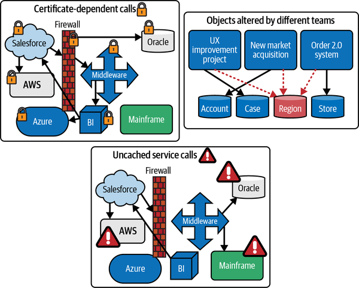
The UX Architect has a strong presence here. Often neglected during design, the administrators and support teams for all applications are also critical personas to design around. Decisions that create less likely or impactful points of failure can get ignored. One of the more tangible arguments for following best practices can be to expose these as technical debt or increases to potential support costs in the long term.
It’s also important to identify a stakeholder who has experience dealing with each of the points of failure—someone who has been responsible for repairing issues caused by creating or running afoul of gaps in strategy and planning. Incorporating their feedback and critiques during a project can provide valuable support for nonfunctional solution design patterns and goals.
Everything in this book should fit into some mental model or paradigm for the aspiring enterprise architect. If the distinction between two terms or concepts (or more importantly, why you should care) isn’t clear, stop and find a diagram that explains them better. Diagrams are also very useful for helping an architect who spans multiple work streams to keep up with each. Reading bodies of stories in Jira or meeting notes can be mind-numbing and waste of time. Outlining in diagrams the concepts you expect to be monitored and kept informed about can greatly reduce the time and effort required to stay aligned. Use these diagrams as a start, then evolve them over time.
This section presents some starter tips for diagramming. I push for a lot of diagrams to be delivered by projects as part of their documentation, as large bodies of text can be difficult to parse. Most of these should stay very simple. Here are a few axioms to keep in mind:
A good diagram is like good code: always be ready to refactor if it becomes too complex.
Make things as complex as they need to be, but no more.
People tend to scan diagrams for words they recognize, which puts a lens of expectation on the rest of the relationships. It can be very helpful to walk viewers through the types of relationships you are diagramming and who they are for.
There are a lot of good architecture diagramming practices listed in the Diagrams section of the Salesforce Architects website. The biggest struggle is trying to make diagrams appeal to everyone’s unique perspective. I try to stick to two types of diagrams: logical/conceptual and physical/system. In projects, I like to own (and control updates to) the highest-level diagrams and let others use those as templates/references to draw more granular versions or variations. Attempting to maintain strict consistency is generally a fool’s errand.
Publishing documents early and often to maintain group awareness is the best possible approach to fighting “perspective chaos.” Make them easy to find and include in PowerPoint presentations, and they may go viral. This is very important when working on large projects or in large organizations. Diagrams can be for you, but they should also be for sharing. Keep other people in mind when you build them. Also, don’t try to put too much into a single view. Some tools, like Lucid and Miro, allow for easy zooming in and out. I have had mixed results trying to use tools like these to put more content into a single canvas; again, keeping it simple is usually best.
The 4+1 architectural view model is a great starting place for building good diagramming practices. This model focuses on using multiple perspectives of projects and systems to make sure all facets are represented. When dealing with hybrid infrastructures that include both cloud and on-premise resources, considering different perspectives is an absolute must. Most of the project killers are found when crossing system or security boundaries. The primary facets of the 4+1 view model are the following perspectives (the “+1” refers to example use cases or scenarios that illustrate the design, providing a fifth view):
Physical (systems and network)
Logical (functionality, concepts, and data flow)
Development (memory, environments, sandboxes, and apps)
Process (data, timings, batches, connections)
These are a great foundation, but depending on the project, adding more (or more specific versions of these) may help your colleagues gain perspective.
My version of the +1 substitutes user experience flow for technical usage scenarios. It’s very important to fully map what leads a user to using your application. You can then build everything that’s required to serve that need. This should be bookended by all of the user’s expected outcomes. This process is akin to journey mapping, and having this perspective can save many hours of work on extra features that seem like they might be beneficial but end up being confusing or frustrating. We’ve all called a business phone number and been asked at the outset, “Would you be willing to stay on the line and participate in a survey after this call?” Seems reasonable, right? But would that be okay for a 911 or other emergency call too? What if help never arrived? These are solution design flaws, not application design flaws, and should be handled by a UX Architect. Ideally the UX and journey mapping exercise would be done prior to system mapping, but in Agile project processes, directions can change. Without a reference architecture for user motivations and expectations, applications can miss delivering a usable tool.
If working with more than one platform, you should also add a “Data and Encryption” perspective. I usually merge this with either the Logical view or the Physical view. Make sure to document all of the helper systems that assist in the transitioning of data across boundaries. Examples include ETL scripts, caching layers, file exports, and middleware. Maintaining a full perspective of these pieces can keep systems that might otherwise be forgotten in view.
My most successful diagramming strategy involves mapping a project based on what is common and what is unique to the key concepts that are valid for that project. You’ll need to make multiple diagrams. Diagrams should be used to illustrate a few concepts, not everything. For each one, the technical focus of the audience should be clear.
Having a map of your diagrams and what they illustrate is a must for good architectural practice. If you’re following these standards, going forward, every diagram should indicate three things clearly:
Why/when?
What are the key concepts/groups?
What are the important details?
You’ll need to scale the parts of the diagram to cover whatever types of complexity you are dealing with. Figure 11-7 shows an example of a simple high-level techno-functional diagram. Something like this may be fine if you are dealing with a complete greenfield system and no other teams, with no integrations or other variables to account for. For projects that include any kind of growth or scale, you should attempt to map and keep track of where your functionality starts to expand.
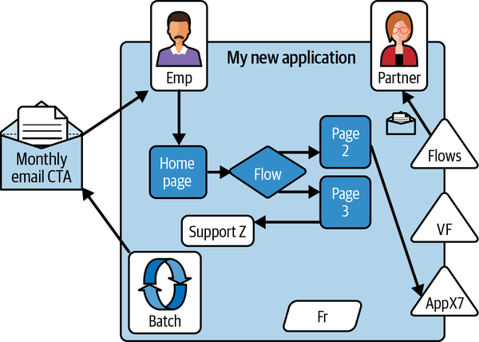
Diagramming strategy becomes a requirement when you need to manage an effort at different levels of detail or across multiple concepts (e.g., functionality diagrams or networking diagrams). It can help to make the simplest diagram that references elements of all the important concepts you are managing first. This high-level document is your navigation level, or table of contents. It frames or creates a map of your other concepts/diagrams to make sure people know what is being attempted. Try not to have overlapping concepts at this level; it’s mostly about setting expectations for the next level. (Consider how different “a map of the world” would look to personas like a traveler, a ship’s captain, or a marine biologist.)
Insufficient context can cause people to reject your organizational structure and either miss the point or, worse, draw their own diagrams. Having a broad title or vague context can lead to contributors not knowing what details belong in the diagram and what needs to be documented in some other fashion. They should work together to make this clear. When it comes to the details, less is more. The tendency can be to include too much; if the details in a diagram are obscuring its intended focus, rebuild it. Be ready to move extraneous details to another diagram or document.
The practice of analyzing projects and infrastructures in terms of “shearing layers,” or layers of change, has been around for many years. It started as a physical building architecture approach and has been adopted by many in the IT industry. Gartner calls this the Pace-Layered Application Strategy. The concept (roughly) is to divide a project or application into domains based on variations in either adaptability or dependability. This is very simple to say, but learning how to apply it will come with experience. Pick two or three of the following list of perspectives to create your top layers. Apply the same types of rationalizations as you go down into layers with more detail:
Standard object use
Storage requirements
Data compliance concerns
Data sensitivity
Data exposure
Encryption standards
Business data concepts
Customer versus employee interactions
Regular versus occasional access
Network, internet, or physical location
Functional capabilities
Key processes
Derived value or revenue
Supported languages
Accessibility
Clearly label the diagrams so that newcomers will know exactly what data they will find there and what they won’t. This will be even more critical when you share responsibility for the diagrams with others. A large amount of the push that people have for diagramming is to show that they have done something. They will try to place their updates in the first location they find. A “diagram by committee” approach can ruin your structure. Keep community diagramming locations limited in number and scope. They should also be constantly reviewed.
Figure 11-8 is a sample of an application map with some curated components. On the left is a curated list of in-scope applications that may be integrated with directly or need to be associated due to functional overlap. At the top are the concerned users for each application. When working on large projects, having a referenceable and reusable list of personas for security and testing is critical. On the right and at the bottom are other sample aspects that may or may not have relevance to your program. Shared objects, code frameworks, business processes, mobile devices, third-party licenses, and geographic locations are other examples that might be critical perspectives to give about your project.
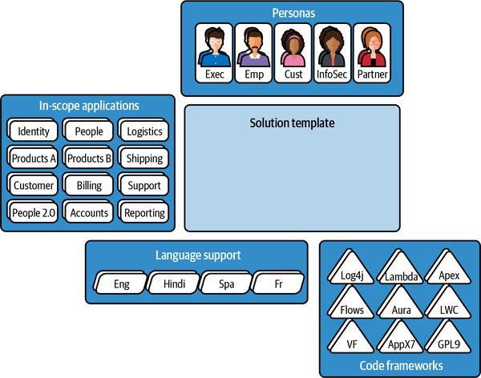
Figure 11-9 shows how an application engineer could use this template as a starting point to diagram how their application fits into a project. Having an understanding of the high-level process flows and concepts of an application can help newcomers quickly orient to the overall project landscape.
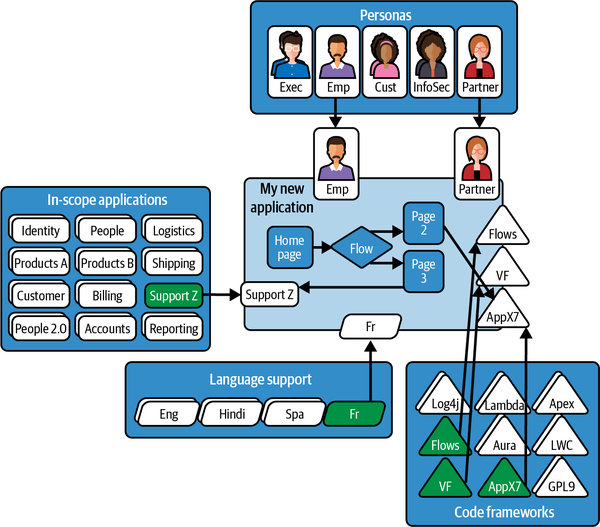
Figure 11-10 illustrates how you can expand this model to hold more applications. The value of this shared concept map is realized when different teams can see areas of overlap or collaborate to create shared resources. Regular rally meetings to confirm whether Team X is still purely focused on Process A can spark discussions about overlap and keep teams coloring within their lines. This view can also humanize status calls and burndown reports by showing the relationships between people and processes.
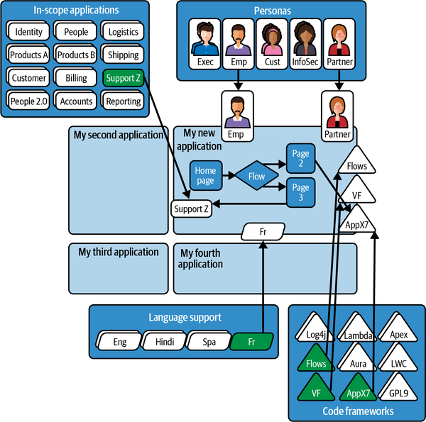
Creating reusable templates can also make your life easier. Your high-level diagrams should be required header slides for all technical presentations. When working on larger implementations, I require two slides in each ARB submission taken from the top-level diagram master: techno-functional capability relevance and a network security topology map. Those two slides bring the business and security stakeholders to awareness quickly. You want the right audience in the loop for important decisions, regardless of any confusing acronyms or jargon. You also want to reduce the risk of and culpability for not properly informing the relevant groups. You have to build awareness before you can garner consensus.
Figure 11-11 is an example of a high-level system topology map that can quickly bring context to a discussion.
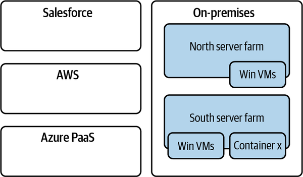
With this template filled out as in Figure 11-12, a meeting titled “Problem with Orders” can quickly attract the attention of key stakeholders. Firewall teams might not feel that they have any role in the order process, but if they can see at a glance that the process crosses a major network boundary, they might engage to help. Engaging the right stakeholders quickly can be key in fast-moving projects or environments. A picture can truly be worth a thousand words, and even more valuable minutes.
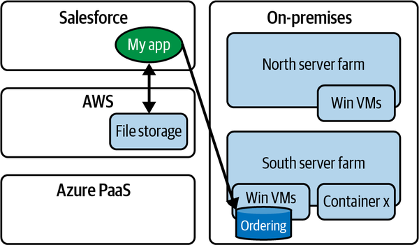
After you have established what key concepts you are going to track throughout the project, it’s a great idea to follow a layered approach, adding more detail as you go. There’s some good detail on the “levels” paradigm on the Salesforce Architects website, but the following are some of my primary guidelines. Good, well-communicated documentation with a well-adopted diagramming plan will pay for itself over time.
At this level it’s okay to show relationships and overlap. Actually, that’s most of what you should be doing at “Level 0.” Start with your title and audience. Then make your main concepts big and label them clearly. Explain the scope of the diagram if you didn’t make it clear in the navigation diagrams.
Here are some examples of clear diagram titles and scopes:
Master data by network location for disaster recovery
Functional responsibilities by development group
DLP exposure map by data type
Functional design by user experience interface
Products and prices by contract term types
A good pattern to follow is “this by that for them.” Don’t try to create too many dimensions or include too many details. Level 0 diagrams should be concept maps and point to deeper-dive diagrams that are domain-specific.
You may end up with multiple views of the big picture, and that’s okay. Try to keep it narrowed down to just a few, or make sure that the relationships are clear via content and naming.
Level 1 diagrams can be created by enterprise architects as frameworks or expectations but should be maintained by domain architects or SMEs. They can include links to data or other repositories. The responsibility for maintaining diagrams that deal with details at lower levels can be shared with other participating leadership teams, but they should be regularly reviewed and updated by a primary owner. Accountability is key. These leaders should care whether their segments of responsibility are well represented publicly. Praise and comparisons at regularly scheduled intervals are your tools to incentivize keeping these diagrams up to date.
Responsibility for building out and maintaining documentation at level 2 and beyond should be delegated to others. These documents can be diagrams, spreadsheets, or text. Not everything lends itself to shapes and colors. Scale the number of levels according to your project’s complexity, and periodically review it. People tend to find a location and make it their home for everything. Curating what is “inside” and what is “outside” of your documentation and diagramming domain can be the most difficult aspect of maintaining a documented view of a project, visual or otherwise.
Don’t try to maintain too many diagrams or go too many levels deep. It’s better to have a few high-quality, well-maintained diagrams than many that won’t be kept up or found.
Most of what I’ve discussed here is just good information architecture practice and is not specific to enterprise or Salesforce architecture. The principles are shared. If you have been in an architectural role for a long time, none of this will be new to you. If you are new in an architect role, it will be up to you to decide how wide or deep you go, but the large majority of Salesforce projects don’t need any more than two or three layers of documentation. The most important thing is to clearly communicate a plan and make sure you have the time to maintain it.
Depending on the size of your project team, an architect may have to be a people manager and not just a technology manager. The greater your breadth of oversight, the more people you will need to align and interconnect. An architect may be viewed as a superhero, connecting teams with unifying concepts. Alternatively, an architect may be seen as a supervillain, demanding heavy rework and adding lots of academic nonfunctional requirements that stall delivery. If people don’t understand the peril you are saving them from, you will likely be seen as a burden.
Just as a refresher, we are defining an architect as a person who’s responsible for assembling diverse components into a compound solution (this is my big-picture definition, among a very blurry world of titles and roles). The components are considered at the application level, not at the level of lines of code or buttons with actions, and an architect might have many Solution Architects reporting to them that they must coordinate and orchestrate.
The most important first step is to establish a list of priorities. These will be social and technical responsibilities, and they will vary greatly from project to project based on scope and available resources. Some priorities you may need to consider are:
Making time for questions
Fighting fires and emergencies
Root cause analysis/postmortem communications
Documentation
Leadership connections (managing up)
Inspection and reviews:
Security
Code standards
Nonfunctional requirements
Running ARB meetings
Amending processes
Team building
Learning and education
Teaching
Starting fires (breaking things) to test processes
Many architects fall into the trap of being either too hands-on or not enough. Losing perspective or missing the big picture is a common trap for architects. Keeping the right balance and communicating your priorities to leadership is key. Documenting the value of a full-time architect can be difficult. Make sure you are supporting valuable processes, or you won’t be seen as valuable.
Identifying risks is another key value proposition for architects. This can be your primary pathway for getting tasks prioritized that are not on the functional roadmap. A risk register should be maintained by your project, or yourself if necessary. Getting risks acknowledged by leadership is the best way to keep from catching the blame when something that was preventable happens. Things do go wrong. Organizations can accept bad luck that they knew the possibility of. Surprises are seldom tolerated.
Finally, team building and “consensus farming” should be a high priority. If the project or platform is to follow your vision, your vision must be clear and well appreciated by everyone. There are no small players on a team. Everyone’s voice should be important to you. If just one person doesn’t know how or why to do something, your plan can fall apart. The architect is not just a technical problem solver; they’re conducting an orchestra. This requires being closely connected to the vision of end users and management alike. Stay in touch with all of the guiding stars of the project so that you can adjust your plans and your teams as needed.
Along with being part of a team, you need to be okay with losing a lot of battles. The biggest difference between a senior engineer and an architect is that the engineer makes the best decision for themselves or their system, while the architect has to make the best decision for all systems. You may have to step in as a tie-breaker when teams are competing for resources or pitching their ideal solution. You will never build something on time or on budget where everyone gets to create their ideal solution. Someone will have to be rushed or resort to a band-aid solution. This will include you having to accept imperfect implementations of your vision from time to time. Be flexible. Live for the marathon, not the sprints.
Architects make solutions that work. Great architects make solutions that work well for everyone and survive both inevitable and unpredictable circumstances. Architects can wear many hats and provide many sources of value. Being able to envision all the components of a project and set up processes to make them work together smoothly is just one part of the job. Dealing with the unexpected and any other challenges that threaten success in any way is the other part.
Smaller projects often need good architects only during the beginning stages. Larger projects usually need a good staff of architects almost to the very end. Those architects may wear different hats along the way, perhaps participating in development or gathering and refining requirements. The architects working on any project must have skills that cover all the vital areas of the project: integrations, interactions, scale, mobile, security, etc. A good architect also looks past the creation phase and plots the successful future of an application or platform. They should actively participate in training or recruiting platform managers and governance teams to ensure ongoing success after it is launched. I have seen more than a few consulting firms that make a living off of fixing or rebuilding ungoverned platform implementations.
With an architect’s perspective, you can balance and convey the need for investments beyond just the immediate and obvious. A good architect finds a path through a variety of obstacles and learns how to weigh and communicate the options. Many times, you will predict a problem but not be able to convince others to invest in avoiding it. Hopefully, people will appreciate all of the issues that didn’t happen due to all of your hard work preventing them. Speak softly, and figure out how to say “I told you so” just loudly enough to not have to say it the next time. You may spend most of your time predicting things that won’t be appreciated and may not come to pass in time for any personal validation; you have to become okay with this. The more tragedies you learn how to prevent, the more you have to watch happen without you being allowed to prevent them. Learning to be graceful when you are ignored is the most important skill you can acquire. You have to regulate your passion. Your relationships will be your only key to preventing any disasters in the future. Above all, maintain relationships as your most critical resource.